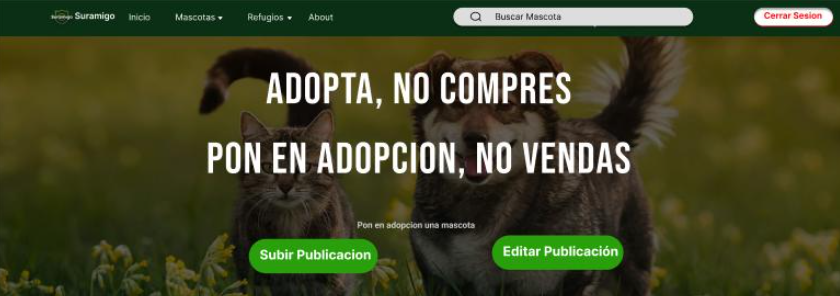

Proyecto propio

Sistema de Adopción de Mascotas
MVP del proceso de adopción de mascotas de punta a punta: prototipo en Figma y desarrollo funcional.
Ver proyecto →
Seeker Parking

Migración CodeIgniter a Laravel
De CodeIgniter a una API REST en Laravel: endpoints, migraciones y documentación Swagger.
Ver proyecto →
Facultad

Diseño app gestión de emergencias
Proyecto final de UX/UI: mapas de empatía, journey maps y benchmarking competitivo.
Ver proyecto →No hay proyectos en esta categoría todavía.